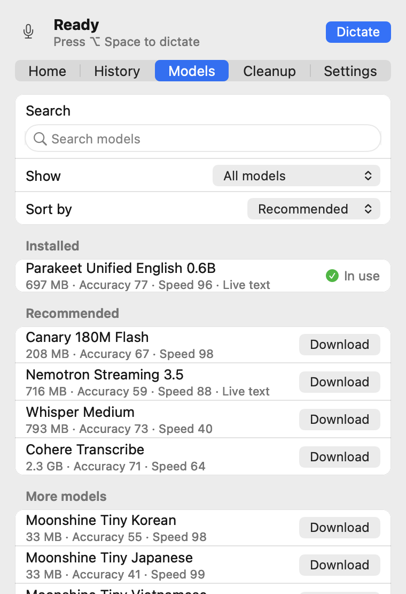
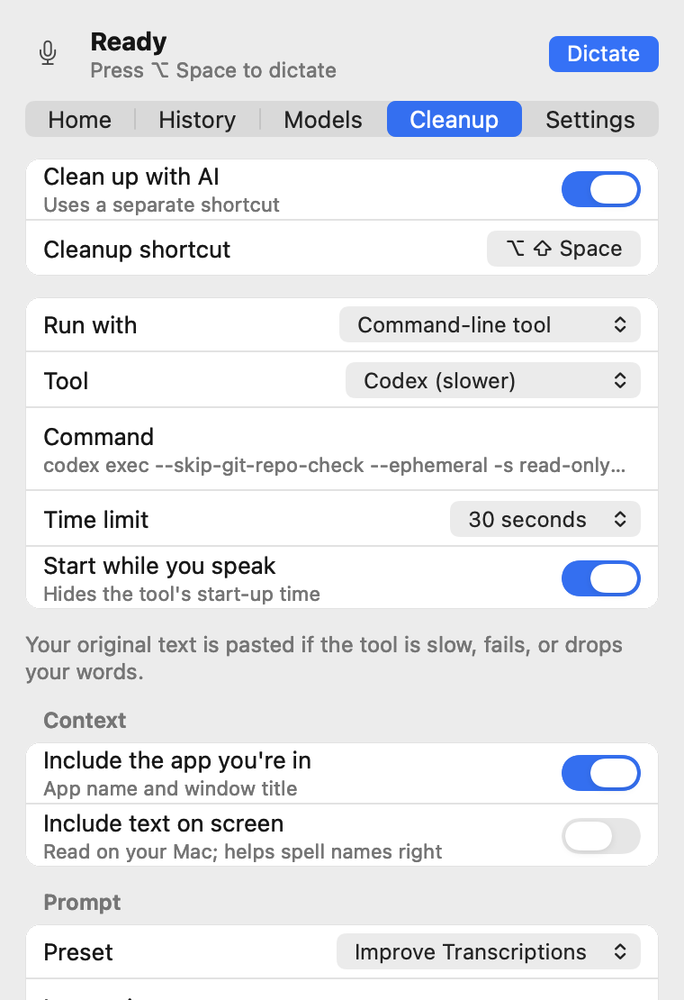

Handy, moved into the menu bar
Handy is the open source speech-to-text app by CJ Pais. Handy Bar keeps its engine and rebuilds the macOS interface as a native menu bar app.
One popover holds the whole app
Click the icon for Home, History, Models, Cleanup and Settings. There's no settings window and no Dock icon.
Native, with no web view running
The popover and the recording indicator are AppKit, drawn from Rust. Views are built when the popover opens and freed when it closes, so it costs nothing while it's shut.
Your voice stays on your Mac
Pick a model in the app (Whisper, Parakeet, Moonshine, Canary and others) and it downloads once, then transcribes locally.

Watch your words arrive
Set the recording indicator to "Levels + live text" and use a streaming model such as Parakeet Unified. The indicator opens into a card and shows what it has heard while you're still talking.
- It never takes focus or clicks, so your cursor stays where you left it.
- It follows you across Spaces and sits over full-screen apps.
- Put it at the top or the bottom of the screen, or keep it to mic levels only.
Levels
Levels + live text
Clean up with the subscription you already have
Cleanup is optional and has its own shortcut. Run it through Handy's AI providers (OpenAI, Anthropic, Groq, Apple Intelligence and more), or through any command-line tool you're signed in to.
claude -p --model haiku
codex exec
- Press the cleanup shortcut. The command starts straight away.
- Speak. The tool's start-up time passes while you're talking.
- Stop. Your prompt and your words go to the command on standard input.
- What it prints is pasted. If the command is slow, fails, or drops your words, your original text is pasted.
- You say
- um so can you send the the invoice to Alex by Friday, no wait, Thursday
- A cleanup prompt can paste
- Can you send the invoice to Alex by Thursday?

Give cleanup some context, if you want to
A cleanup model spells names better when it knows what you're looking at. App and window name are on by default; screen text is off until you turn it on.
-
Include the app you're in
Adds the app name and window title to the cleanup prompt.
-
Include text on screen
Opt-in, and it needs the Screen Recording permission. The text is read on your Mac with Apple Vision, then added to the cleanup prompt so the names in front of you come out spelled right.
What leaves your Mac
For plain dictation, nothing. Cleanup is the only part that can send text anywhere, and only to the provider or command you choose.
| What | Where it goes |
|---|---|
| Your voice | Nowhere. It's recorded and transcribed on your Mac. |
| Speech models | Downloaded once from inside the app, then run locally. |
| History and recordings | Kept on your Mac. Copy or delete entries in the History tab. |
| Transcribed text | Typed at your cursor. When you use the cleanup shortcut, it also goes to the AI provider or command-line tool you picked. |
| App name, window title, text on screen | Only when you use the cleanup shortcut, inside the cleanup prompt, to the provider or tool you picked. App name and window title are on by default (a window title can include a document name or email subject); screen text is off by default. |
| App log | On your Mac. Handy Bar leaves typed keys and cleanup output out of its own log lines. Builds made with the debug build script also log transcripts (Handy only hides them in release builds). |
| Update checks | Turned off. Handy's updater would replace Handy Bar with upstream Handy. |
Build it from source
There are no prebuilt releases yet. Handy Bar is developed and tested on macOS 26 on Apple Silicon. You need Rust and Bun; see BUILD.md for toolchain setup.
git clone https://github.com/thekindofme/Handy.git handy-bar
cd handy-bar
git checkout menubar-native
bun install
mkdir -p src-tauri/resources/models
curl -L -o src-tauri/resources/models/silero-vad-v6.2-F32.gguf \
https://huggingface.co/handy-computer/silero-vad-v6.2-gguf/resolve/main/silero-vad-v6.2-F32.gguf
scripts/menubar/build-test-app.sh
open "src-tauri/target/debug/bundle/macos/Handy Bar.app"macOS ties Microphone and Accessibility permissions to the app's signature. If you rebuild often, set HANDY_SIGNING_IDENTITY to a local code-signing identity, or you'll be asked again after every build.
To run Handy's original interface from the same build, start it with HANDY_WEBVIEW_UI=1.
Working today
Dictation, live text, the recording indicator, model downloads, history, microphone and output selection, shortcuts, AI cleanup and most settings.
Not in the menu bar yet
Adding or deleting cleanup prompts, fetching a provider's model list, custom words, filler-word lists, debug tuning and translations. The menu bar interface is English only for now.
Built on Handy.
Handy Bar exists because Handy, by CJ Pais and its contributors, is open source. The recording, the models and the transcription are Handy's work. Handy Bar keeps Handy's MIT license.
This is an unofficial fork, not affiliated with or endorsed by the Handy project. The Handy Bar name and icon are this fork's own; Handy's name and logo belong to Handy. Found a bug in Handy Bar? Please report it here, not upstream.